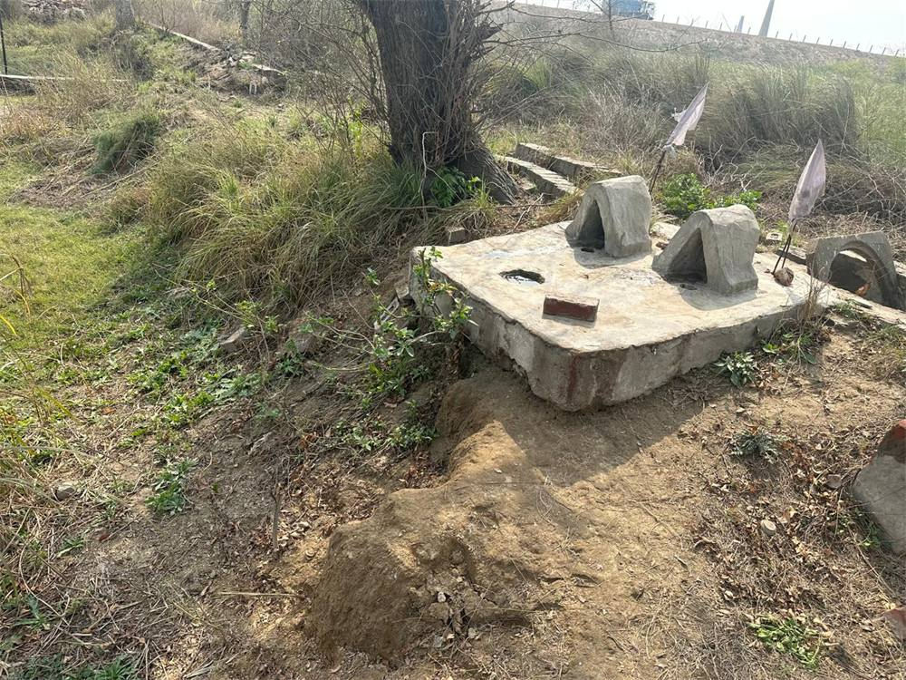
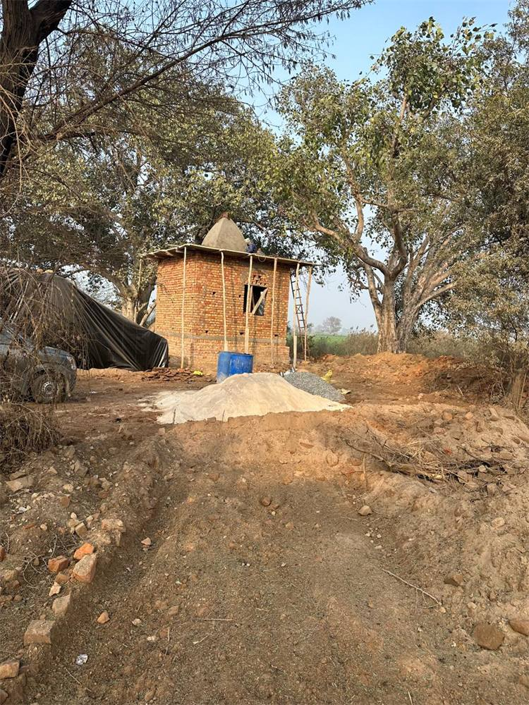

A Journey of Faith
Every brick of Shri Pashupatinath Dham was laid through the devotion and seva of the Saini family and fellow devotees. These photographs capture the dham as it rose — humble, honest and blessed — on the sacred soil of Hassangarh.




Bhoomi & Bhog — The Sacred Ground
A serene plot beside a natural sarovar (pond) at Hassangarh was chosen and consecrated as the abode of Bhagwan Pashupatinath.
Foundation & Walls
The garbhagriha (sanctum) was raised course by course in brick, supported by traditional timber scaffolding — every hand an offering of seva.
The Shikhara
The conical shikhara was built over the sanctum, giving the dham its sacred silhouette against the grove of trees.
The Sacred Murtis from Kathmandu
On 3 September 2023, Dr. Kamlesh Kumar Saini and his family brought the sacred murtis of the Shiva Parivar (the Pashupatinath family) from Pashupatinath, Kathmandu, Nepal, to be enshrined at the dham.
Pran Pratishtha — 30 November 2024
With a Kalash Yatra, Vedic havan and a Vishal Bhandara, the Shiva Parivar was consecrated (Pran Pratishtha) at the dham — awakening the shrine and opening it to all devotees.